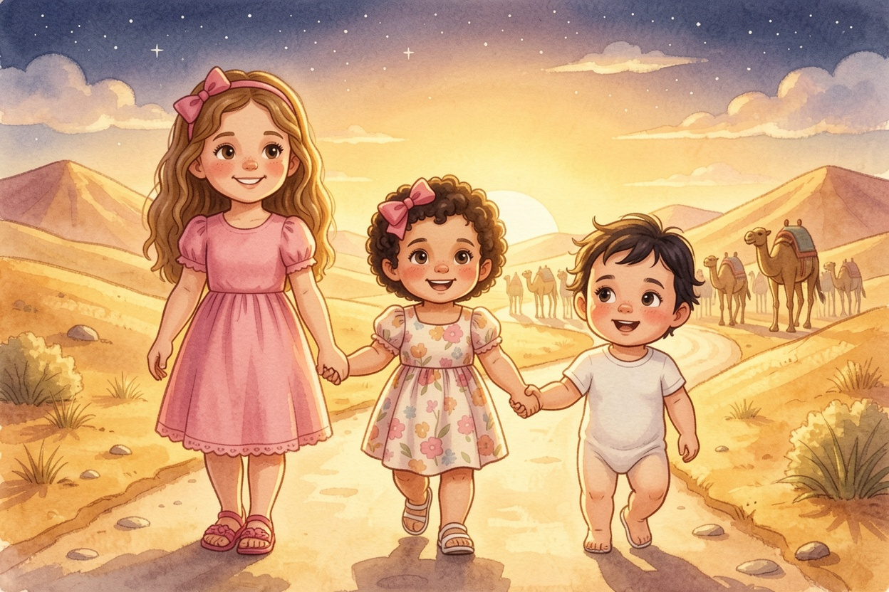
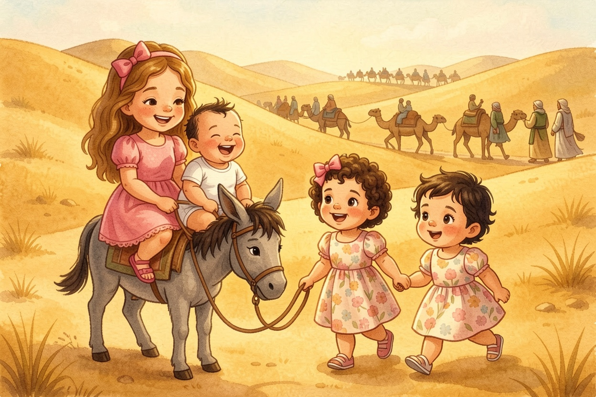
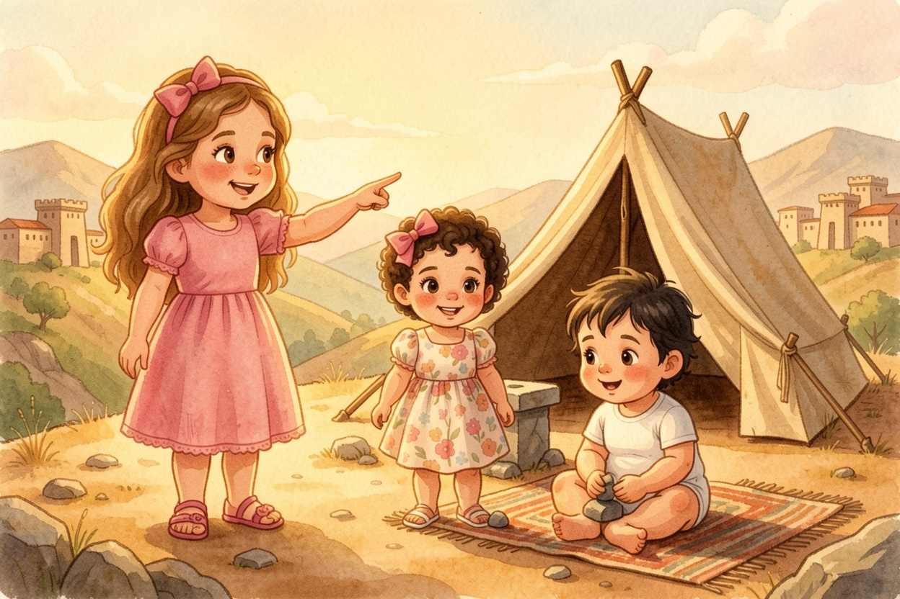
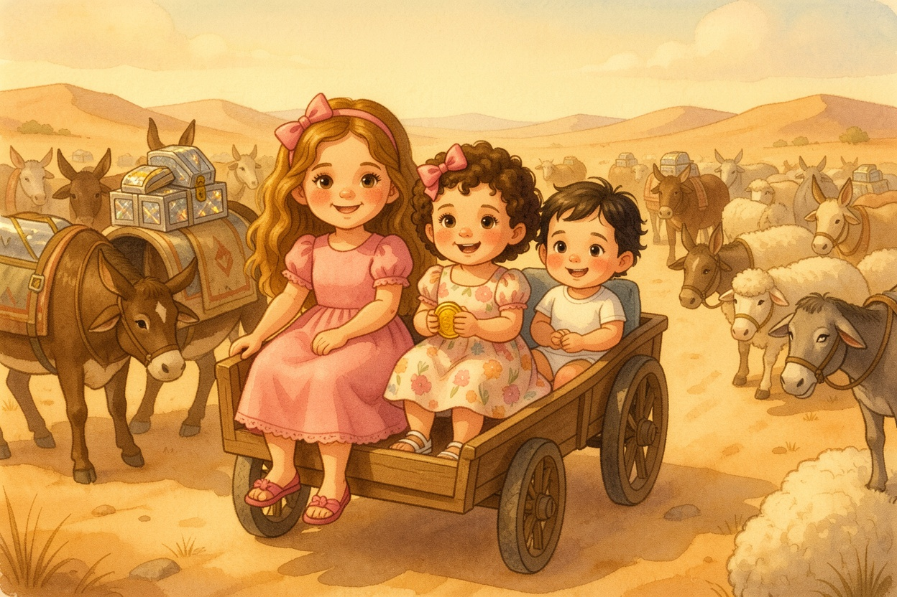
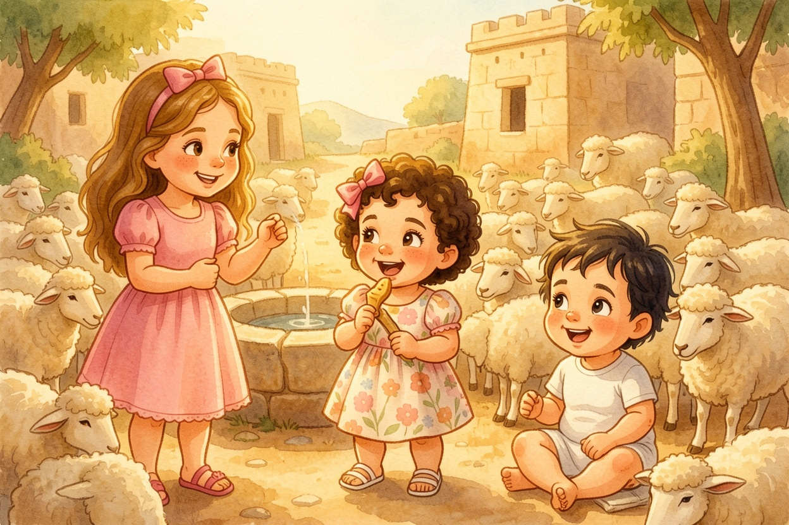
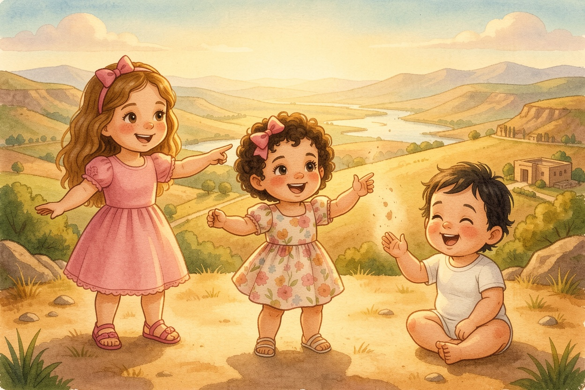
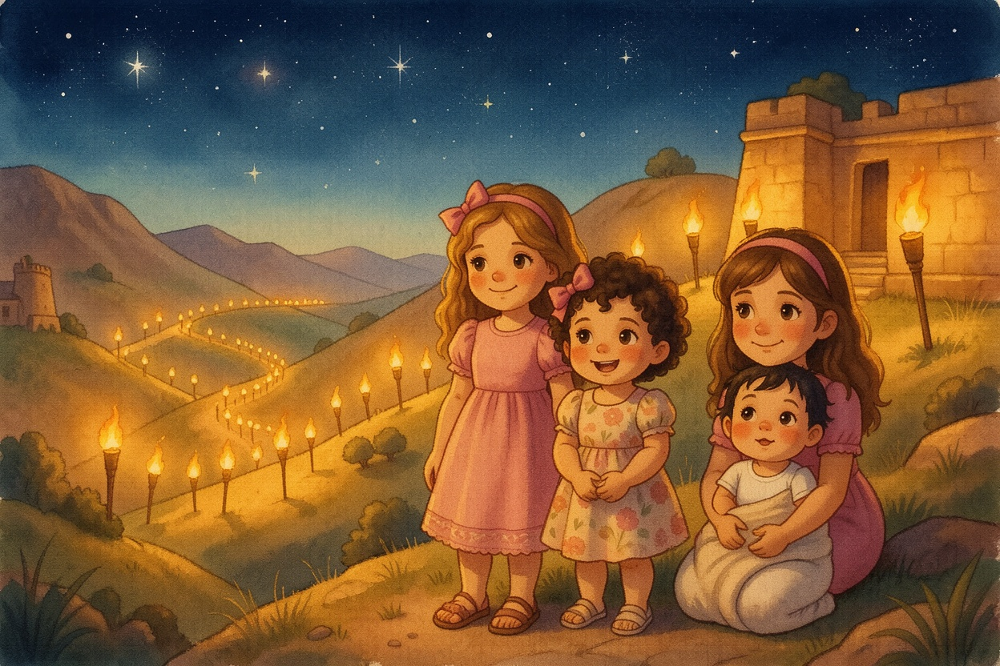
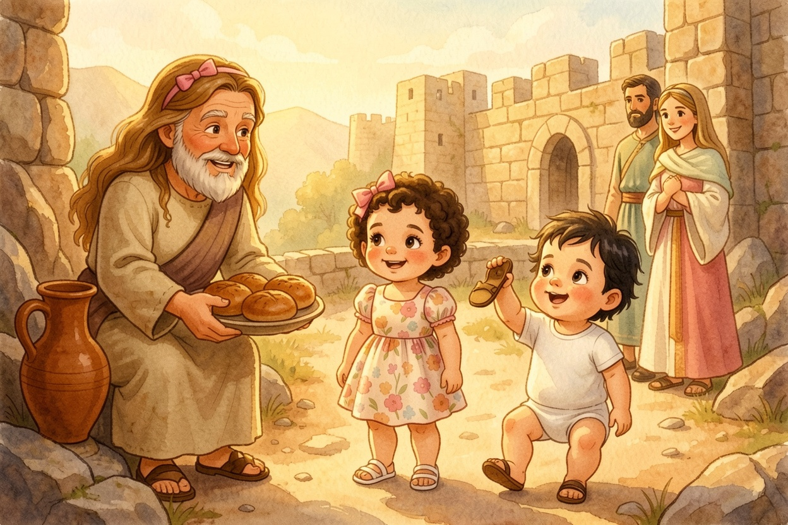
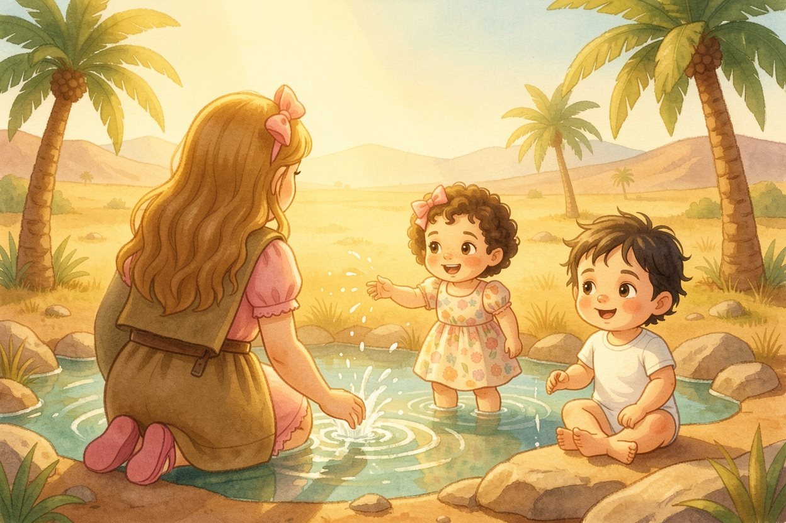
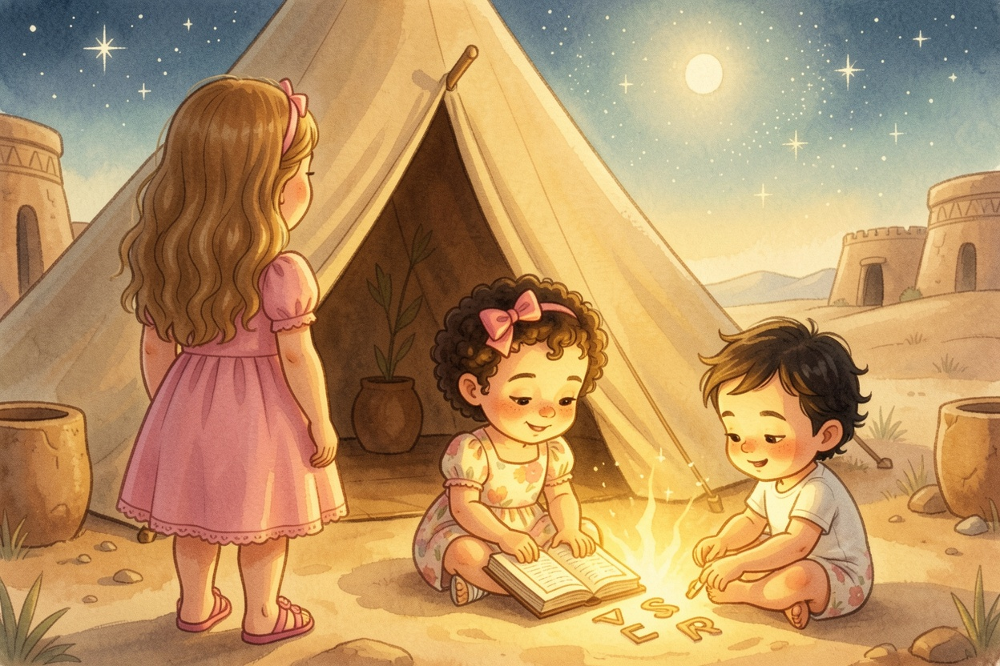

A Parasha Book · Parashat Lech Lecha
לֶךְ־לְךָ
Go! Avram's Great Journey
starring Aviya, Tzofia & Lielle
Meet the explorers

Aviya, Tzofia & Lielle are about to climb into Parashat Lech Lecha (Genesis 12:1–17:27).
Everything on these pages comes straight from the pesukim — the plain meaning, the peshat.
Each picture page is followed by the words of the Torah it comes from, in Hebrew and English, and a question to look for in the text.
This time the Chumash opened with just two words, and they rang out like a bell: "Lech lecha — Go!" The sisters found themselves in Charan, beside a big tent. Hashem was speaking to Avram: Go from your land, from your birthplace, and from your father's house, to the land that I will show you. I will make you a great nation and bless you, and you will be a blessing. Tzofia whispered, "But where?" Aviya looked at the page. "He doesn't say yet," she said. "Avram just has to go."
Look closely: What did Hashem promise Avram if he would go?
To make him a great nation, to bless him, make his name great — and that he would be a blessing (12:2).
From the Torah · Bereshit 12:1-3
1 וַיֹּאמֶר יְהוָה אֶל־אַבְרָם לֶךְ־לְךָ מֵאַרְצְךָ וּמִמּוֹלַדְתְּךָ וּמִבֵּית אָבִיךָ אֶל־הָאָרֶץ אֲשֶׁר אַרְאֶךָּ׃
12:1 Now the Lord said to Avram, Get thee out of thy country, and from thy kindred, and from thy father’s house, to the land that I will show thee:
2 וְאֶעֶשְׂךָ לְגוֹי גָּדוֹל וַאֲבָרֶכְךָ וַאֲגַדְּלָה שְׁמֶךָ וֶהְיֵה בְּרָכָה׃
12:2 and I will make of thee a great nation, and I will bless thee, and make thy name great; and thou shalt be a blessing:
3 וַאֲבָרֲכָה מְבָרְכֶיךָ וּמְקַלֶּלְךָ אָאֹר וְנִבְרְכוּ בְךָ כֹּל מִשְׁפְּחֹת הָאֲדָמָה׃
12:3 and I will bless them that bless thee, and curse him that curses thee: and in thee shall all the families of the earth be blessed.

2On the Road
Bereshit 12:4-6On the Road
Avram went, just as Hashem told him, and Lot went with him. Avram was seventy-five years old when he left Charan. He took Sarai his wife, and Lot, and everything they had, and all the people who were with them — and they set out for the land of Canaan. The sisters walked behind the caravan, holding hands in a row. Lielle toddled along as fast as she could. About a hundred times, Tzofia asked, "Are we there yet?" Finally they came to Shechem.
Look closely: How old was Avram when he left Charan?
Seventy-five years old (12:4).
From the Torah · Bereshit 12:4-6
4 וַיֵּלֶךְ אַבְרָם כַּאֲשֶׁר דִּבֶּר אֵלָיו יְהוָה וַיֵּלֶךְ אִתּוֹ לוֹט וְאַבְרָם בֶּן־חָמֵשׁ שָׁנִים וְשִׁבְעִים שָׁנָה בְּצֵאתוֹ מֵחָרָן׃
12:4 So Avram departed, as the Lord had spoken to him; and Lot went with him: and Avram was seventy five years old when he departed out of Ḥaran.
5 וַיִּקַּח אַבְרָם אֶת־שָׂרַי אִשְׁתּוֹ וְאֶת־לוֹט בֶּן־אָחִיו וְאֶת־כָּל־רְכוּשָׁם אֲשֶׁר רָכָשׁוּ וְאֶת־הַנֶּפֶשׁ אֲשֶׁר־עָשׂוּ בְחָרָן וַיֵּצְאוּ לָלֶכֶת אַרְצָה כְּנַעַן וַיָּבֹאוּ אַרְצָה כְּנָעַן׃
12:5 And Avram took Saray his wife, and Lot his brother’s son, and all their substance that they had gathered, and the souls that they had acquired in Ḥaran; and they went forth to go to the land of Kena῾an; and into the land of Kena῾an they came.
6 וַיַּעֲבֹר אַבְרָם בָּאָרֶץ עַד מְקוֹם שְׁכֶם עַד אֵלוֹן מוֹרֶה וְהַכְּנַעֲנִי אָז בָּאָרֶץ׃
12:6 And Avram passed through the land to the place of Shekhem unto the terebinth of More. And the Kena῾ani was then in the land.

3An Altar and a Tent
Bereshit 12:7-8An Altar and a Tent
Hashem appeared to Avram and said: "To your offspring I will give this land." So Avram built an altar right there. Then he moved on to the hills east of Beit-El and pitched his tent. Aviya pointed: "Beit-El is over there, in the west — and Ai is over there, in the east." Avram built another altar and called out in the name of Hashem. Tzofia stacked little stones into a tiny altar of her own.
Look closely: Between which two places did Avram pitch his tent?
Beit-El on the west and Ai on the east (12:8).
From the Torah · Bereshit 12:7-8
7 וַיֵּרָא יְהוָה אֶל־אַבְרָם וַיֹּאמֶר לְזַרְעֲךָ אֶתֵּן אֶת־הָאָרֶץ הַזֹּאת וַיִּבֶן שָׁם מִזְבֵּחַ לַיהוָה הַנִּרְאֶה אֵלָיו׃
12:7 And the Lord appeared to Avram, and said, To thy seed will I give this land: and there he built an altar to the Lord, who had appeared to him.
8 וַיַּעְתֵּק מִשָּׁם הָהָרָה מִקֶּדֶם לְבֵית־אֵל וַיֵּט אָהֳלֹה בֵּית־אֵל מִיָּם וְהָעַי מִקֶּדֶם וַיִּבֶן־שָׁם מִזְבֵּחַ לַיהוָה וַיִּקְרָא בְּשֵׁם יְהוָה׃
12:8 And he removed from there to a mountain on the east of Bet-el, and pitched his tent, having Bet-el on the west, and ῾Ay on the east: and there he built an altar to the Lord, and called upon the name of the Lord.

4Famine — and Back Again
Bereshit 12:10; Bereshit 13:1-2Famine — and Back Again
Then there was a famine in the land — no rain, no food. So Avram went down to Egypt to live there for a while. Tzofia's tummy grumbled just hearing about it. Later, Avram came back up from Egypt to the Negev, with Sarai and Lot. And now he was very rich — in cattle, in silver and in gold! Lielle tried to eat a gold coin. Aviya took it back, gently.
Look closely: What was Avram rich in when he came back from Egypt?
Livestock, silver and gold (13:2).
From the Torah · Bereshit 12:10; Bereshit 13:1-2
10 וַיְהִי רָעָב בָּאָרֶץ וַיֵּרֶד אַבְרָם מִצְרַיְמָה לָגוּר שָׁם כִּי־כָבֵד הָרָעָב בָּאָרֶץ׃
12:10 And there was famine in the land: and Avram went down to Miżrayim to sojourn there; for the famine was severe in the land.
1 וַיַּעַל אַבְרָם מִמִּצְרַיִם הוּא וְאִשְׁתּוֹ וְכָל־אֲשֶׁר־לוֹ וְלוֹט עִמּוֹ הַנֶּגְבָּה׃
13:1 And Avram went up out of Miżrayim, he, and his wife, and all that he had, and Lot with him, into the Negev.
2 וְאַבְרָם כָּבֵד מְאֹד בַּמִּקְנֶה בַּכֶּסֶף וּבַזָּהָב׃
13:2 And Avram was very rich in cattle, in silver, and in gold.

5No Quarreling
Bereshit 13:5-9No Quarreling
Lot had lots of sheep and cattle and tents too — so many that the land couldn't hold them all together. Avram's shepherds and Lot's shepherds started to quarrel. Tzofia knew all about quarreling over toys. Then Avram said to Lot: "Please, let there be no quarrel between me and you, or between my shepherds and yours — for we are brothers. The whole land is in front of you. If you go left, I'll go right." Aviya and Tzofia looked at each other and shared their snack.
Look closely: What reason did Avram give for not quarreling?
"For we are brothers" — anashim achim anachnu (13:8).
From the Torah · Bereshit 13:5-9
5 וְגַם־לְלוֹט הַהֹלֵךְ אֶת־אַבְרָם הָיָה צֹאן־וּבָקָר וְאֹהָלִים׃
13:5 And Lot also, who went with Avram, had flocks, and herds, and tents.
6 וְלֹא־נָשָׂא אֹתָם הָאָרֶץ לָשֶׁבֶת יַחְדָּו כִּי־הָיָה רְכוּשָׁם רָב וְלֹא יָכְלוּ לָשֶׁבֶת יַחְדָּו׃
13:6 And the land was not able to bear them, that they might dwell together: for their substance was great, so that they could not dwell together.
7 וַיְהִי־רִיב בֵּין רֹעֵי מִקְנֵה־אַבְרָם וּבֵין רֹעֵי מִקְנֵה־לוֹט וְהַכְּנַעֲנִי וְהַפְּרִזִּי אָז יֹשֵׁב בָּאָרֶץ׃
13:7 And there was a strife between the herdmen of Avram’s cattle and the herdmen of Lot’s cattle: and the Kena῾ani and the Perizzi dwelt then in the land.
8 וַיֹּאמֶר אַבְרָם אֶל־לוֹט אַל־נָא תְהִי מְרִיבָה בֵּינִי וּבֵינֶיךָ וּבֵין רֹעַי וּבֵין רֹעֶיךָ כִּי־אֲנָשִׁים אַחִים אֲנָחְנוּ׃
13:8 And Avram said to Lot, Let there be no strife, I pray thee, between me and thee, and between my herdmen and thy herdmen, for we are brethren.
9 הֲלֹא כָל־הָאָרֶץ לְפָנֶיךָ הִפָּרֶד נָא מֵעָלָי אִם־הַשְּׂמֹאל וְאֵימִנָה וְאִם־הַיָּמִין וְאַשְׂמְאִילָה׃
13:9 Is not the whole land before thee? separate thyself, I pray thee, from me: if thou wilt take the left hand, then I will go to the right; or if thou depart to the right hand, then I will go to the left.
Bereshit 13:10-13Lot Chooses
Lot lifted up his eyes and saw the whole plain of the Jordan — it was watered everywhere, green like the garden of Hashem. So Lot chose the plain, and traveled east, and pitched his tents all the way to Sedom. Aviya read the next line and frowned: the people of Sedom were very wicked. "It looked so pretty," said Tzofia. "Pretty isn't everything," said Aviya.
Look closely: Why did Lot choose the plain of the Jordan?
Because it was well-watered everywhere, like the garden of Hashem (13:10).
From the Torah · Bereshit 13:10-13
10 וַיִּשָּׂא־לוֹט אֶת־עֵינָיו וַיַּרְא אֶת־כָּל־כִּכַּר הַיַּרְדֵּן כִּי כֻלָּהּ מַשְׁקֶה לִפְנֵי שַׁחֵת יְהוָה אֶת־סְדֹם וְאֶת־עֲמֹרָה כְּגַן־יְהוָה כְּאֶרֶץ מִצְרַיִם בֹּאֲכָה צֹעַר׃
13:10 And Lot lifted up his eyes, and beheld all the plain of the Yarden, that it was well watered everywhere, before the Lord destroyed Sedom and ῾Amora, like the garden of the Lord, like the land of Miżrayim, as thou comest to Żo῾ar.
11 וַיִּבְחַר־לוֹ לוֹט אֵת כָּל־כִּכַּר הַיַּרְדֵּן וַיִּסַּע לוֹט מִקֶּדֶם וַיִּפָּרְדוּ אִישׁ מֵעַל אָחִיו׃
13:11 Then Lot chose him all the plain of the Yarden; and Lot journeyed east; and they separated themselves one from the other.
12 אַבְרָם יָשַׁב בְּאֶרֶץ־כְּנָעַן וְלוֹט יָשַׁב בְּעָרֵי הַכִּכָּר וַיֶּאֱהַל עַד־סְדֹם׃
13:12 Avram dwelt in the land of Kena῾an, and Lot dwelt in the cities of the plain, and pitched his tent toward Sedom.
13 וְאַנְשֵׁי סְדֹם רָעִים וְחַטָּאִים לַיהוָה מְאֹד׃
13:13 But the men of Sedom were wicked and sinners before the Lord exceedingly.

7Look Up and Walk
Bereshit 13:14-18Look Up and Walk
After Lot left, Hashem said to Avram: "Lift up your eyes and look — north and south and east and west. All the land you see I will give to you and your offspring forever. I will make your offspring like the dust of the earth. Get up and walk through the land, its length and its width." Tzofia spun in a circle pointing every direction. Aviya picked up a handful of dust and let it blow away. "That many?!"
Look closely: What did Hashem compare Avram's offspring to here?
The dust of the earth — if one could count the dust, his offspring could be counted (13:16).
From the Torah · Bereshit 13:14-18
14 וַיהוָה אָמַר אֶל־אַבְרָם אַחֲרֵי הִפָּרֶד־לוֹט מֵעִמּוֹ שָׂא נָא עֵינֶיךָ וּרְאֵה מִן־הַמָּקוֹם אֲשֶׁר־אַתָּה שָׁם צָפֹנָה וָנֶגְבָּה וָקֵדְמָה וָיָמָּה׃
13:14 And the Lord said to Avram, after Lot was separated from him, Lift up now thy eyes, and look from the place where thou art, northward, and southward, and eastward, and westward;
15 כִּי אֶת־כָּל־הָאָרֶץ אֲשֶׁר־אַתָּה רֹאֶה לְךָ אֶתְּנֶנָּה וּלְזַרְעֲךָ עַד־עוֹלָם׃
13:15 for all the land which thou seest, to thee will I give it, and to thy seed for ever.
16 וְשַׂמְתִּי אֶת־זַרְעֲךָ כַּעֲפַר הָאָרֶץ אֲשֶׁר אִם־יוּכַל אִישׁ לִמְנוֹת אֶת־עֲפַר הָאָרֶץ גַּם־זַרְעֲךָ יִמָּנֶה׃
13:16 And I will make thy seed as the dust of the earth: so that if a man can number the dust of the earth, then shall thy seed also be numbered.
17 קוּם הִתְהַלֵּךְ בָּאָרֶץ לְאָרְכָּהּ וּלְרָחְבָּהּ כִּי לְךָ אֶתְּנֶנָּה׃
13:17 Arise, walk through the land in the length of it and in the breadth of it; for I will give it to thee.
18 וַיֶּאֱהַל אַבְרָם וַיָּבֹא וַיֵּשֶׁב בְּאֵלֹנֵי מַמְרֵא אֲשֶׁר בְּחֶבְרוֹן וַיִּבֶן־שָׁם מִזְבֵּחַ לַיהוָה׃
13:18 Then Avram removed his tent, and came and dwelt by the terebinths of Mamre, which is in Ḥevron, and built there an altar to the Lord.

8The Night Rescue
Bereshit 14:12-16The Night Rescue
Kings went to war, and Lot was captured and taken away with everything he owned. Someone escaped and ran to tell Avram the Ivri. Avram gathered his trained men — three hundred and eighteen of them, born in his own household — and chased after the captors all the way to Dan. At night he split up his men and rescued Lot. Tzofia hid behind Aviya. But Avram brought everyone back — Lot, his belongings, the women and the people.
Look closely: How many trained men did Avram take with him?
Three hundred and eighteen (14:14).
From the Torah · Bereshit 14:12-16
12 וַיִּקְחוּ אֶת־לוֹט וְאֶת־רְכֻשׁוֹ בֶּן־אֲחִי אַבְרָם וַיֵּלֵכוּ וְהוּא יֹשֵׁב בִּסְדֹם׃
14:12 And they took Lot, Avram’s brother’s son, who dwelt in Sedom, and his goods, and departed.
13 וַיָּבֹא הַפָּלִיט וַיַּגֵּד לְאַבְרָם הָעִבְרִי וְהוּא שֹׁכֵן בְּאֵלֹנֵי מַמְרֵא הָאֱמֹרִי אֲחִי אֶשְׁכֹּל וַאֲחִי עָנֵר וְהֵם בַּעֲלֵי בְרִית־אַבְרָם׃
14:13 And there came one that had escaped, and told Avram the Hebrew; for he dwelt by the terebinths of Mamre the Emori, brother of Eshkol, and brother of ῾Aner: and these were confederate with Avram.
14 וַיִּשְׁמַע אַבְרָם כִּי נִשְׁבָּה אָחִיו וַיָּרֶק אֶת־חֲנִיכָיו יְלִידֵי בֵיתוֹ שְׁמֹנָה עָשָׂר וּשְׁלֹשׁ מֵאוֹת וַיִּרְדֹּף עַד־דָּן׃
14:14 And when Avram heard that his brother was taken captive, he led forth his trained servants, born in his own house, three hundred and eighteen, and pursued them to Dan.
15 וַיֵּחָלֵק עֲלֵיהֶם לַיְלָה הוּא וַעֲבָדָיו וַיַּכֵּם וַיִּרְדְּפֵם עַד־חוֹבָה אֲשֶׁר מִשְּׂמֹאל לְדַמָּשֶׂק׃
14:15 And he divided himself against them, he and his servants by night, and smote them, and pursued them to Ḥova, which is on the left hand of Dammeseq.
16 וַיָּשֶׁב אֵת כָּל־הָרְכֻשׁ וְגַם אֶת־לוֹט אָחִיו וּרְכֻשׁוֹ הֵשִׁיב וְגַם אֶת־הַנָּשִׁים וְאֶת־הָעָם׃
14:16 And he brought back all the goods, and also brought back his brother Lot, and his goods, and the women also, and the people.

9Bread and Wine
Bereshit 14:18-23Bread and Wine
Malki-Tzedek, king of Shalem, came out to greet Avram with bread and wine. He was a kohen to God Most High, and he blessed Avram. Avram gave him a tenth of everything. Then the king of Sedom said, "Give me the people — keep the riches for yourself." But Avram said no: "Not a thread, not even a sandal strap will I take!" Lielle held up her own sandal. Everyone laughed.
Look closely: What did Avram refuse to take from the king of Sedom?
"Not a thread nor a sandal strap" — nothing at all (14:23).
From the Torah · Bereshit 14:18-23
18 וּמַלְכִּי־צֶדֶק מֶלֶךְ שָׁלֵם הוֹצִיא לֶחֶם וָיָיִן וְהוּא כֹהֵן לְאֵל עֶלְיוֹן׃
14:18 And Malki-żedeq king of Shalem brought out bread and wine: and he was a priest of the most high God.
19 וַיְבָרְכֵהוּ וַיֹּאמַר בָּרוּךְ אַבְרָם לְאֵל עֶלְיוֹן קֹנֵה שָׁמַיִם וָאָרֶץ׃
14:19 And he blessed him, and said, Blessed be Avram of the most high God, Possessor of heaven and earth:
20 וּבָרוּךְ אֵל עֶלְיוֹן אֲשֶׁר־מִגֵּן צָרֶיךָ בְּיָדֶךָ וַיִּתֶּן־לוֹ מַעֲשֵׂר מִכֹּל׃
14:20 and blessed be the most high God, Who has delivered thy enemies into thy hand. And he gave him a tithe of everything.
21 וַיֹּאמֶר מֶלֶךְ־סְדֹם אֶל־אַבְרָם תֶּן־לִי הַנֶּפֶשׁ וְהָרְכֻשׁ קַח־לָךְ׃
14:21 And the king of Sedom said to Avram, Give me the persons, and take the goods to thyself.
22 וַיֹּאמֶר אַבְרָם אֶל־מֶלֶךְ סְדֹם הֲרִימֹתִי יָדִי אֶל־יְהוָה אֵל עֶלְיוֹן קֹנֵה שָׁמַיִם וָאָרֶץ׃
14:22 And Avram said to the king of Sedom, I have raised my hand to the Lord, the most high God, the Possessor of heaven and earth,
23 אִם־מִחוּט וְעַד שְׂרוֹךְ־נַעַל וְאִם־אֶקַּח מִכָּל־אֲשֶׁר־לָךְ וְלֹא תֹאמַר אֲנִי הֶעֱשַׁרְתִּי אֶת־אַבְרָם׃
14:23 that I will take nothing from a thread even to a shoe-latchet, and that I will not take anything that is thine, lest thou shouldst say, I have made Avram rich:
Bereshit 15:1-6Count the Stars
Hashem said to Avram, "Don't be afraid, Avram — I am your shield." Then He took Avram outside and said: "Look at the sky and count the stars, if you can." The sisters lay on their backs and tried. Tzofia got to "eleven!" and gave up. "So will your offspring be," Hashem said. Aviya read the last part twice: Avram believed in Hashem, and Hashem counted it for him as righteousness.
Look closely: What did Hashem tell Avram to count?
The stars — "so shall your offspring be" (15:5).
From the Torah · Bereshit 15:1-6
1 אַחַר הַדְּבָרִים הָאֵלֶּה הָיָה דְבַר־יְהוָה אֶל־אַבְרָם בַּמַּחֲזֶה לֵאמֹר אַל־תִּירָא אַבְרָם אָנֹכִי מָגֵן לָךְ שְׂכָרְךָ הַרְבֵּה מְאֹד׃
15:1 After these things the word of the Lord came to Avram in a vision, saying, Fear not, Avram: I am thy shield; thy reward will be very great.
2 וַיֹּאמֶר אַבְרָם אֲדֹנָי יֱהוִה מַה־תִּתֶּן־לִי וְאָנֹכִי הוֹלֵךְ עֲרִירִי וּבֶן־מֶשֶׁק בֵּיתִי הוּא דַּמֶּשֶׂק אֱלִיעֶזֶר׃
15:2 And Avram said, Lord God, what wilt thou give me, seeing I go childless, and the steward of my house is Eli῾ezer of Dammeseq?
3 וַיֹּאמֶר אַבְרָם הֵן לִי לֹא נָתַתָּה זָרַע וְהִנֵּה בֶן־בֵּיתִי יוֹרֵשׁ אֹתִי׃
15:3 And Avram said, Behold, to me Thou hast given no seed: and, one born in my house is my heir.
4 וְהִנֵּה דְבַר־יְהוָה אֵלָיו לֵאמֹר לֹא יִירָשְׁךָ זֶה כִּי־אִם אֲשֶׁר יֵצֵא מִמֵּעֶיךָ הוּא יִירָשֶׁךָ׃
15:4 And, behold, the word of the Lord came to him, saying, This shall not be thy heir; but he that shall come forth out of thy own bowels shall be thy heir.
5 וַיּוֹצֵא אֹתוֹ הַחוּצָה וַיֹּאמֶר הַבֶּט־נָא הַשָּׁמַיְמָה וּסְפֹר הַכּוֹכָבִים אִם־תּוּכַל לִסְפֹּר אֹתָם וַיֹּאמֶר לוֹ כֹּה יִהְיֶה זַרְעֶךָ׃
15:5 And He brought him outside, and said, Look now toward heaven, and count the stars, if thou be able to number them: and He said to him, So shall thy seed be.
6 וְהֶאֱמִן בַּיהוָה וַיַּחְשְׁבֶהָ לּוֹ צְדָקָה׃
15:6 And he believed in the Lord; and He counted it to him for righteousness.

11The God Who Sees
Bereshit 16:7-16The God Who Sees
An angel of Hashem found Hagar by a spring of water in the wilderness, on the road to Shur. "You will have a son," the angel said, "and you will call him Yishmael — because Hashem has heard you." Hagar called Hashem "El Ro'i" — the God who sees me. Tzofia splashed the cool water on her face. "He sees us too?" asked Tzofia. Aviya nodded. Avram was eighty-six when Yishmael was born.
Look closely: What does the name Yishmael mean?
"Hashem has heard" your suffering (16:11).
From the Torah · Bereshit 16:7-16
7 וַיִּמְצָאָהּ מַלְאַךְ יְהוָה עַל־עֵין הַמַּיִם בַּמִּדְבָּר עַל־הָעַיִן בְּדֶרֶךְ שׁוּר׃
16:7 And an angel of the Lord found her by a fountain of water in the wilderness, by the fountain on the way to Shur.
8 וַיֹּאמַר הָגָר שִׁפְחַת שָׂרַי אֵי־מִזֶּה בָאת וְאָנָה תֵלֵכִי וַתֹּאמֶר מִפְּנֵי שָׂרַי גְּבִרְתִּי אָנֹכִי בֹּרַחַת׃
16:8 And he said, Hagar, Saray’s maid, whence camest thou? and whither wilt thou go? And she said, I flee from the face of my mistress Saray.
9 וַיֹּאמֶר לָהּ מַלְאַךְ יְהוָה שׁוּבִי אֶל־גְּבִרְתֵּךְ וְהִתְעַנִּי תַּחַת יָדֶיהָ׃
16:9 And the angel of the Lord said to her, Return to thy mistress, and submit thyself to her hands.
10 וַיֹּאמֶר לָהּ מַלְאַךְ יְהוָה הַרְבָּה אַרְבֶּה אֶת־זַרְעֵךְ וְלֹא יִסָּפֵר מֵרֹב׃
16:10 And the angel of the Lord said to her, I will multiply thy seed exceedingly, that it shall not be numbered for multitude.
11 וַיֹּאמֶר לָהּ מַלְאַךְ יְהוָה הִנָּךְ הָרָה וְיֹלַדְתְּ בֵּן וְקָרָאת שְׁמוֹ יִשְׁמָעֵאל כִּי־שָׁמַע יְהוָה אֶל־עָנְיֵךְ׃
16:11 And the angel of the Lord said to her, Behold, thou art with child, and shalt bear a son, and shalt call his name Yishma᾽el; because the Lord has heard thy affliction.
12 וְהוּא יִהְיֶה פֶּרֶא אָדָם יָדוֹ בַכֹּל וְיַד כֹּל בּוֹ וְעַל־פְּנֵי כָל־אֶחָיו יִשְׁכֹּן׃
16:12 And he will be a wild man; his hand will be against every man, and every man’s hand against him; and he shall dwell in the presence of all his brethren.
13 וַתִּקְרָא שֵׁם־יְהוָה הַדֹּבֵר אֵלֶיהָ אַתָּה אֵל רֳאִי כִּי אָמְרָה הֲגַם הֲלֹם רָאִיתִי אַחֲרֵי רֹאִי׃
16:13 And she called the name of the Lord that spoke to her, Thou God seest me: for she said,
14 עַל־כֵּן קָרָא לַבְּאֵר בְּאֵר לַחַי רֹאִי הִנֵּה בֵין־קָדֵשׁ וּבֵין בָּרֶד׃
16:14 Have I also here looked after Him that sees me? Therefore the well was called Be᾽er-laĥay-ro᾽i; behold, it is between Qadesh and Bered.
15 וַתֵּלֶד הָגָר לְאַבְרָם בֵּן וַיִּקְרָא אַבְרָם שֶׁם־בְּנוֹ אֲשֶׁר־יָלְדָה הָגָר יִשְׁמָעֵאל׃
16:15 And Hagar bore Avram a son: and Avram called his son’s name, whom Hagar bore, Yishma᾽el.
16 וְאַבְרָם בֶּן־שְׁמֹנִים שָׁנָה וְשֵׁשׁ שָׁנִים בְּלֶדֶת־הָגָר אֶת־יִשְׁמָעֵאל לְאַבְרָם׃
16:16 And Avram was eighty six years old, when Hagar bore Yishma᾽el to Avram.

12New Names
Bereshit 17:1-5; Bereshit 17:15-19New Names
When Avram was ninety-nine, Hashem appeared to him: "Walk before Me and be wholehearted." Then He gave him a new name: "No longer will you be called Avram — your name is Avraham, because I have made you the father of a multitude of nations." And Sarai became Sarah! "Sarah will have a son," Hashem said, "and you will call him Yitzchak." Tzofia tried out her own name with a new letter. Aviya closed the Chumash, smiling. "Next week," she said, "we meet Yitzchak."
Look closely: Why was Avram's name changed to Avraham?
Because Hashem made him the father of a multitude of nations — av hamon goyim (17:5).
From the Torah · Bereshit 17:1-5; Bereshit 17:15-19
1 וַיְהִי אַבְרָם בֶּן־תִּשְׁעִים שָׁנָה וְתֵשַׁע שָׁנִים וַיֵּרָא יְהוָה אֶל־אַבְרָם וַיֹּאמֶר אֵלָיו אֲנִי־אֵל שַׁדַּי הִתְהַלֵּךְ לְפָנַי וֶהְיֵה תָמִים׃
17:1 And when Avram was ninety nine years old, the Lord appeared to Avram, and said to him, I am the Almighty God; walk before Me, and be perfect.
2 וְאֶתְּנָה בְרִיתִי בֵּינִי וּבֵינֶךָ וְאַרְבֶּה אוֹתְךָ בִּמְאֹד מְאֹד׃
17:2 And I will make My covenant between Me and thee, and will multiply thee exceedingly.
3 וַיִּפֹּל אַבְרָם עַל־פָּנָיו וַיְדַבֵּר אִתּוֹ אֱלֹהִים לֵאמֹר׃
17:3 And Avram fell on his face: and God talked with him, saying,
4 אֲנִי הִנֵּה בְרִיתִי אִתָּךְ וְהָיִיתָ לְאַב הֲמוֹן גּוֹיִם׃
17:4 As for Me, behold, My covenant is with thee, and thou shalt be a father of many nations.
5 וְלֹא־יִקָּרֵא עוֹד אֶת־שִׁמְךָ אַבְרָם וְהָיָה שִׁמְךָ אַבְרָהָם כִּי אַב־הֲמוֹן גּוֹיִם נְתַתִּיךָ׃
17:5 Neither shall thy name any more be called Avram, but thy name shall be Avraham; for a father of many nations have I made thee.
15 וַיֹּאמֶר אֱלֹהִים אֶל־אַבְרָהָם שָׂרַי אִשְׁתְּךָ לֹא־תִקְרָא אֶת־שְׁמָהּ שָׂרָי כִּי שָׂרָה שְׁמָהּ׃
17:15 And God said to Avraham, As for Saray thy wife, thou shalt not call her name Saray, but Sara shall her name be.
16 וּבֵרַכְתִּי אֹתָהּ וְגַם נָתַתִּי מִמֶּנָּה לְךָ בֵּן וּבֵרַכְתִּיהָ וְהָיְתָה לְגוֹיִם מַלְכֵי עַמִּים מִמֶּנָּה יִהְיוּ׃
17:16 And I will bless her, and give thee a son also of her: and I will bless her, and she shall be a mother of nations; kings of peoples shall issue from her.
17 וַיִּפֹּל אַבְרָהָם עַל־פָּנָיו וַיִּצְחָק וַיֹּאמֶר בְּלִבּוֹ הַלְּבֶן מֵאָה־שָׁנָה יִוָּלֵד וְאִם־שָׂרָה הֲבַת־תִּשְׁעִים שָׁנָה תֵּלֵד׃
17:17 Then Avraham fell upon his face, and laughed, and said in his heart, Shall a child be born to him that is a hundred years old? and shall Sara, that is ninety years old, give birth?
18 וַיֹּאמֶר אַבְרָהָם אֶל־הָאֱלֹהִים לוּ יִשְׁמָעֵאל יִחְיֶה לְפָנֶיךָ׃
17:18 And Avraham said to God, O that Yishma᾽el might live before thee!
19 וַיֹּאמֶר אֱלֹהִים אֲבָל שָׂרָה אִשְׁתְּךָ יֹלֶדֶת לְךָ בֵּן וְקָרָאתָ אֶת־שְׁמוֹ יִצְחָק וַהֲקִמֹתִי אֶת־בְּרִיתִי אִתּוֹ לִבְרִית עוֹלָם לְזַרְעוֹ אַחֲרָיו׃
17:19 And God said, Sara thy wife shall bear thee a son indeed; and thou shalt call his name Yiżĥaq: and I will establish My covenant with him for an everlasting covenant, and with his seed after him.
The End
Three sisters follow Avram and Sarai into the land of Canaan. Read it again this Shabbat — and see how much more you can find in the pesukim.
Pesukim from Sefaria (Tanach with Nikkud · The Koren Jerusalem Bible). Illustrations made with FLUX.2 [klein]. Peshat fidelity checked with Jev.